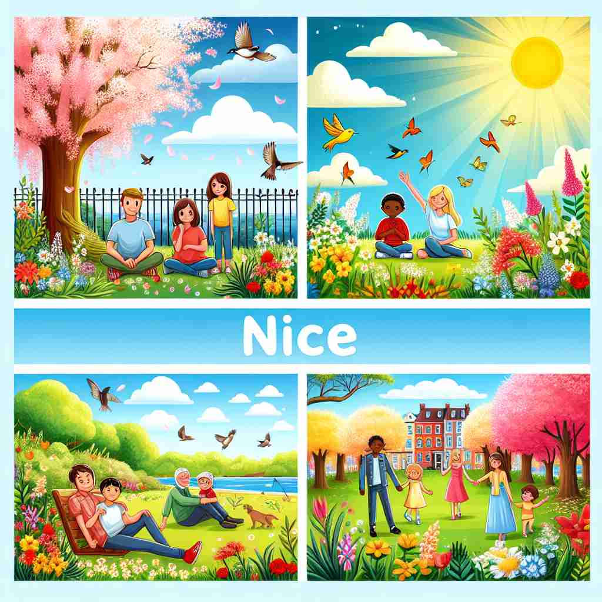

💬 The families are enjoying the nice weather in the park.
💬 They are having a nice dinner together.

💬 The park is a nice place to relax with friends.
🔈 [naɪs]
🗝️ adj. giving pleasure or satisfaction
🖼️ 在一个舒适的咖啡馆里，你坐在窗边，阳光洒在桌上，一杯香气四溢的咖啡在手边。这种愉悦的享受让你心生感叹：'这里真 nice。'这种场景完美体现了'nice'作为给予愉悦和满足的含义。
🔍 记住'nice'的核心含义是'令人愉悦或满意的'。想象一个能给你带来愉悦感的场景，可能是美好的事物、友善的人、精确的概念或高尚的品德。这些都能引发愉悦感，因此都可以用'nice'来描述。通过这个核心概念，你可以更容易理解和记忆'nice'的各种含义。
💬 The families are enjoying the nice weather in the park.
💬 They are having a nice dinner together.
💬 The park is a nice place to relax with friends.
🌳 来源于拉丁语 “nescius”，意为无知的。经过数百年的演变，如今通常表示令人愉快的或友好的。
💡 可以联想为“neat and kind”（整洁和友好），因为“nice”通常用来形容人或事物的愉快和友好特征。
🗝️ adj. kind, friendly, and considerate
🖼️ 在一个友善的社区聚会上，一个邻居走过来，微笑着递给你一块自制的派，并问道：'能来参加真高兴！'他体贴而友好的态度让人感觉十分温暖和'nice'。
💬 She's a very nice person, always willing to help others.
❓ 给人愉悦感的行为通常是友善的
🗝️ adj. good or of high quality
🖼️ 在著名的画廊中，你看到了一幅栩栩如生的风景画。精湛的技艺和高质量的画作让大家都赞叹不已，称之为'nice work'。
💬 That's a nice piece of furniture you've bought.
❓ 高质量的事物往往能带来满足感
🗝️ adj. subtle or precise
🖼️ 在一个时装工作室里，设计师正在仔细地修改一件礼服上的细节。他的动作精确，每个针脚都经过慎重考虑。助手感叹道：'你的手艺真是太 nice 了。'这里'nice'便是指细腻和精确。
💬 There's a nice distinction between these two concepts.
❓ 精确的区分能带来智力上的满足感
🗝️ adj. respectable or virtuous
🖼️ 一位知名的慈善家在出席慈善晚宴时，因为持续的善行而受到众人尊敬。大家都对他的行为表示赞赏，称他是一位'nice person'，这里的'nice'体现了尊重和高尚的品质。
💬 They come from a very nice family.
❓ 品德高尚常给人正面愉悦的印象
🗝️ adj. pleasant or attractive
🖼️ 在一个美丽的公园中，树木繁茂，花草芬芳。这种自然的美丽和宜人的环境让人忍不住说：'这个公园真是太 nice 了。'这里'nice'用来形容环境的吸引力。
💬 She has a nice smile.
❓ 令人愉悦的事物通常是吸引人的